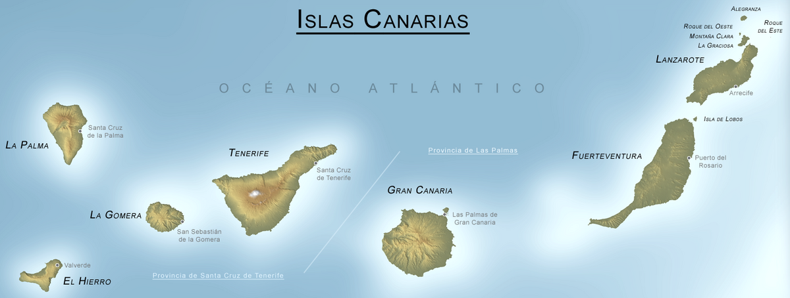

En esta actividad debes reproducir la web que consta de varios párrafos, una lista desordenada anidada y una lista ordenada, enlaces, una imagen, una tabla y un div
Este es un párrafo con un salto de línea aquí:
y aquí continúa en otra línea.

| Hora | Lunes | Martes | Miércoles | Jueves | Viernes |
|---|---|---|---|---|---|
| 15:00 - 16:50 | PNT | IDP | ITK | LND | FUW |
| 16:55 - 17:45 | FUW | Inglés | ITK | Inglés | FUW |
| 17:45 - 18:00 | Recreo | ||||
| 18:00 - 18:55 | |||||
| 18:55 - 19:50 | Taller | ||||
| 19:50 - 20:45 | |||||
Este es un párrafo dentro de un div y aquí hay un span que cambia el color de una palabra.